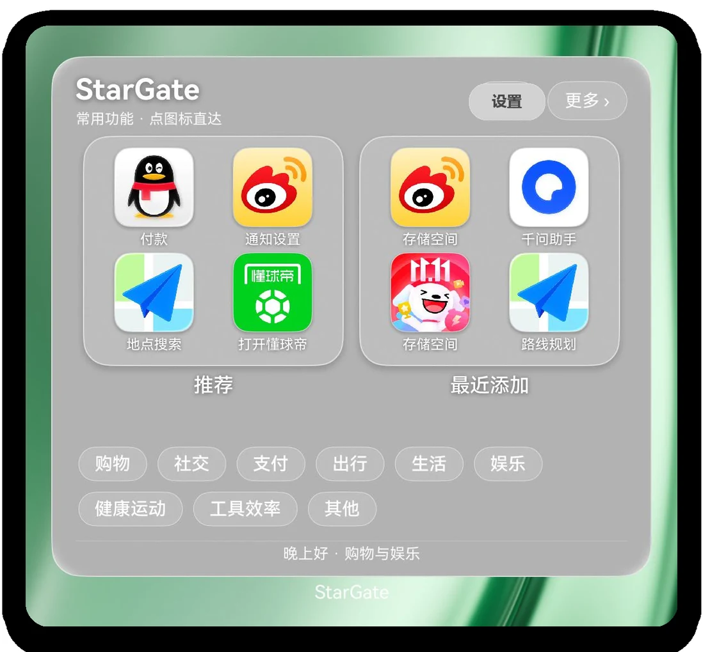
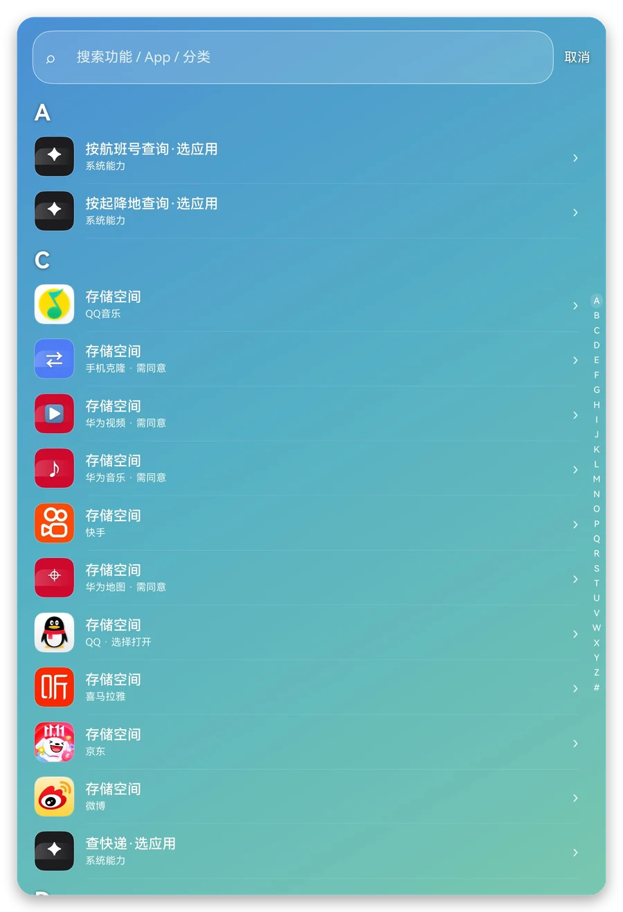

入口太深
常用功能藏在菜单、标签与二级页面里，每次使用都要重新走一遍路径。
开源鸿蒙移动应用创新成果 HARMONYOS NEXT
星门把散落在各个 App 里的高频功能，重新组织成一张桌面卡片。不用先打开 App，点一下，就能进入目标功能页。


WHY STARGATE
付款码、路线规划、会议入会、查快递——它们散落在不同 App 的三级页面里。用户要先选 App，再找入口，最后才到达功能。
常用功能藏在菜单、标签与二级页面里，每次使用都要重新走一遍路径。
桌面被 App 图标占满，但真正高频的，往往只是其中的少数几个功能。
知道要做什么，却不一定记得它在哪个 App、哪个标签页、第几层菜单。
图标和层级本身就是记忆负担。文字化、可搜索的入口，才是真正的低门槛。
大多数步骤，都和事情本身无关。
“App 是容器，功能才是服务。”
星门的产品判断THE PRODUCT
桌面卡片负责抬手就用；搜索负责知道名字就找；分类负责按场景逛；设置负责按习惯调整。四个入口，共用同一份能力目录。
推荐、最近添加、分类和搜索入口都在这一屏。高频功能抬手上桌，不用先打开任何 App。
按 A–Z 浏览全部能力，也可以直接输入中文、App 名或拼音首字母，结果即时出现。
按出行、购物、办公、生活等场景组织能力，一屏一组，点分类进入该类目的完整列表。
分类支持长按拖动排序，顺序会持久化并实时同步到卡片；卡片偏好也在这里调整。
LIVE DEMO
四个入口，四种找功能的方式。点击左侧切换，或播放完整演示。
HOW IT WORKS
核心只做四件事：整理能力、验证入口、解释推荐、一次直达。复杂的部分留在系统接口后面。
以功能为单位组织，而不是以 App 为单位。每条能力都有目标页面、分类和一条最可靠路由。
真机可打开才进入目录；打不开就明确提示，不回退首页，也不制造“成功”的假象。
按当日使用、当月使用、时间衰减、时段偏好等信号加权；同分按 id 稳定排序，结果可复现。
一条能力只保留一条最可靠路由；一次点击构造一个显式 Want，交给系统拉起目标 Ability。
ONE EXAMPLE
包名 + 一条公开 URI
com.amap.hmapp
systemnav://routeplan
构造一个显式 Want
bundleName + uri
高德打开路线规划页
startAbility(want)
不注入 UI，不模拟点击；入口不可用就明确提示，不回退首页。
GET STARTED
不需要额外 SDK，不需要改造 App。安装、添加卡片，然后点一下。
连接 HarmonyOS NEXT 真机，用 hdc 安装。
hdc install -r StarGate.hap长按桌面空白处，进入“编辑桌面 → 卡片”，找到 StarGate 添加到桌面。
常用功能、搜索、分类都在手边。入口不可用时会明确提示。
USE CASES
不是让用户记住更多 App，而是让功能按照“我要做的事”重新组织。
乘车码、路线规划、航班查询，抬手上桌。
文档、消息、审批，跳过 App 首页。
外卖、缴费、挂号，按场景分类直达。
不用记图标，按功能名或拼音首字母找。
OPEN SOURCE · HARMONYOS NEXT
星门已经走通从桌面卡片、搜索、分类到一键直达的完整闭环。下一步，是让更多能力被组织起来。